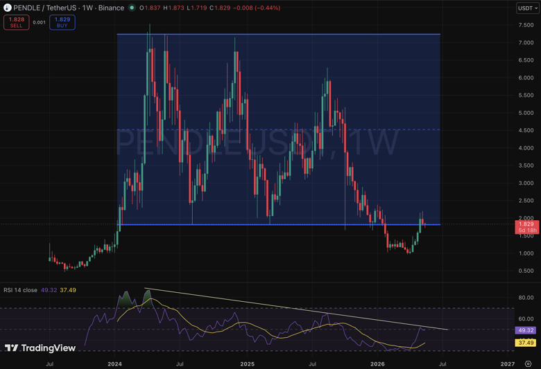
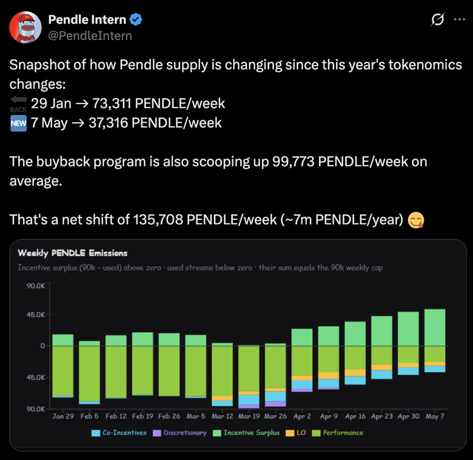

ในรอบก่อนๆ คนจำนวนมากเข้า Pendle เพราะอยากซื้อ YT เพื่อขยาย exposure ต่อ airdrop/points นั่นทำให้ Pendle ดูเหมือนเป็นเครื่องมือของสายฟาร์มมากกว่าโครงสร้างพื้นฐานการเงิน
แต่หลังเสียง airdrop เริ่มเบาลง สิ่งที่เหลืออยู่กลับชัดกว่าเดิม: ตลาดยังต้องการที่ที่สามารถเอา yield ลอยตัว มาแปลงเป็น yield ที่ล็อกได้
PT คือเงินต้นล็อกราคา, YT คือ yield ในอนาคต — เทรดความต่างระหว่างความแน่นอนกับ upside ได้ในตลาดเดียว
RWA ไม่ขาด asset — มันขาด distribution layer ที่ทำให้ผลตอบแทนถูกซื้อขาย แพ็กใหม่ และตั้งราคาเป็นช่วงเวลาได้
เมื่อ RWA กลายเป็น perps, funding rate กลายเป็นต้นทุนที่ต้องจัดการ — Boros ทำให้ rate กลายเป็น asset ที่ซื้อขายได้
TL;DR
- Pendle ไม่ใช่แค่ฟาร์มแบบ airdrop รอบเก่า — มันเป็น yield distribution layer ที่ RWA ขาดอยู่
- PT/YT แยก yield ออกจากเงินต้น ทำให้สถาบันบริหาร duration ได้เหมือน fixed income จริง
- ตลาด tokenized Treasuries อยู่ที่ $10B เทียบกับ $49.6T fixed income — ถ้าแค่เสี้ยวเล็กย้ายมา on-chain Pendle อยู่ในตำแหน่งที่ดี
- Pendle เป็น distribution channel ไม่ใช่เครื่องปั๊ม TVL — yield ที่จะ work ต้องต่อเนื่อง พอคาดการณ์ได้ และมีทั้งสองฝั่ง demand
- Boros ขยาย thesis ไปถึง funding rate ของ perps — ทำให้ rate เป็น asset ที่ hedge ได้
- Emission ลดครึ่ง + buyback 99,773/week = net supply shift ~135,708 PENDLE/week (~7M/ปี) น่าสนใจสำหรับสาย fundamental
PT และ YT: Mechanics ที่ simple กว่าที่คิด
แกนของ Pendle ง่ายมาก: เอาสินทรัพย์ที่มีผลตอบแทนมาแยกเป็น PT และ YT
สิทธิ์ในเงินต้น เหมือนการซื้อสินทรัพย์ลดราคาเพื่อรอรับคืนเต็มจำนวนตอนครบกำหนด — เหมาะสำหรับคนอยากล็อก yield แน่นอน
สิทธิ์ใน yield ในอนาคต — ใครเชื่อว่า yield จะสูงขึ้น หรือมี upside จาก incentive ก็ไปฝั่งนี้
Pendle ทำให้ "คนอยากล็อก yield" กับ "คนอยากเก็ง yield" มาเจอกันในที่เดียว — และ price discovery เกิดขึ้นระหว่างทั้งสองฝั่ง
สิ่งนี้สำคัญกับ RWA มากกว่า DeFi native yield ด้วยซ้ำ
ทำไม RWA ถึงต้องการ Pendle
RWA จำนวนมากไม่ได้ขาด asset — มันมีสินทรัพย์จริง มี Treasury มี private credit มี cash flow
สิ่งที่มันขาดคือ "distribution layer" ที่ทำให้ผลตอบแทนเหล่านั้นถูกซื้อขาย แพ็กใหม่ และตั้งราคาเป็นช่วงเวลาได้
Treasury, private credit, money market fund — สินทรัพย์มีพร้อม แต่ไม่มีตลาดรองสำหรับซื้อขาย yield แยกจากเงินต้น
นักลงทุนสถาบันที่อยากเปลี่ยน duration หรือ hedge yield exposure ต้องออกจากสินทรัพย์ทั้งก้อน — ไม่ใช่แค่ขาย yield ส่วนที่เกินออกมา
เมื่อ RWA yield ถูก tokenize เข้า Pendle มันกลายเป็นสินทรัพย์ที่ซื้อขายได้แยกส่วน — เปิด secondary market ที่ไม่เคยมีมาก่อน
สถาบันมอง yield ต่างจากเรา
สถาบันไม่ได้มอง yield แบบ degen เขาไม่ได้ถามแค่ว่า APY วันนี้สูงไหม
เขาถามว่า: 3 เดือนข้างหน้า 6 เดือนข้างหน้า 12 เดือนข้างหน้า cash flow จะนิ่งแค่ไหน? ล็อกได้ไหม? บริหาร duration ได้ไหม? และเอาไปวางใน treasury policy ได้หรือเปล่า?
ช่องว่างระหว่าง $10B กับ $49.6T
RWA.xyz แสดงภาพว่าตลาด tokenized RWA ไม่รวม stablecoin อยู่ในระดับหลายหมื่นล้านดอลลาร์ ขณะที่ tokenized U.S. Treasuries เองอยู่ราว $10B และมี 7D APY ประมาณ 3% กว่า
ตัวเลขนี้ยังเล็กมากเมื่อเทียบกับตลาด fixed income สหรัฐฯ ที่ SIFMA รายงานว่า outstanding อยู่ราว $49.6T ใน 4Q25
Scale Gap: On-Chain vs Traditional Fixed Income
Tokenized U.S. Treasuries ~$10B, 7D APY ~3% — ตลาดเพิ่งเริ่มต้น และยังมีข้อจำกัดด้าน access และ liquidity
U.S. fixed income outstanding ~$49.6T (SIFMA 4Q25) — ตลาดที่ mature มีสภาพคล่องสูง และคุ้นเคยกับ rate management
ช่องว่างไม่ได้บอกว่าเงินทั้งหมดจะมา on-chain แต่ถ้าแค่เสี้ยวเล็กของ fixed income ต้องการ secondary yield market บนเชน Pendle อยู่ในตำแหน่งที่น่าสนใจมาก
Pendle เป็น Distribution Channel ไม่ใช่เครื่องปั๊ม TVL
แต่ Pendle ไม่ได้ทำให้ทุก RWA โต
ถ้า underlying yield ไม่น่าสนใจ สภาพคล่องบาง narrative ไม่ชัด หรือ incentive ไม่พอ PT/YT ก็อาจไม่เกิดตลาดจริง Pendle ช่วยแยกความต้องการของผู้เล่นออกเป็น "คนอยากล็อก yield" กับ "คนอยากเก็ง yield" แต่ไม่ได้การันตีว่าจะมี demand ทั้งสองฝั่งเสมอ
สิ่งที่ควรมองจึงไม่ใช่ "โปรเจกต์เข้า Pendle แล้ว TVL จะขึ้นไหม" แต่คือ "yield ของโปรเจกต์นั้นมีคุณสมบัติพอจะถูก Pendle-ized ไหม"
Yield แบบไหนที่เหมาะกับ Pendle
Yield ที่เหมาะกับ Pendle ต้องต่อเนื่อง พอคาดการณ์ได้ และมีคนอยากซื้อขายความต่างระหว่างความแน่นอนกับ upside
Treasury yield, money market fund, private credit, basis yield, dividend-like cash flow, strategy yield ที่มีโครงสร้างชัด
Yield ที่สุ่ม, campaign สั้นๆ หรือแจกแบบ event-driven มากเกินไป — ยากที่จะสร้างตลาดระยะยาวได้
ถามว่ามีคนอยากซื้อ PT เพราะ yield ล็อกดีพอไหม และมีคนอยากซื้อ YT เพราะเชื่อว่า yield จะสูงกว่า implied ไหม — ถ้าทั้งสองมี ตลาดจะเกิด
Boros: เมื่อ Rate กลายเป็น Asset
Boros ทำให้ thesis นี้กว้างขึ้นอีกชั้น
ถ้า Pendle V2 คือการเทรด yield ของสินทรัพย์ Boros คือการเทรด "rate" โดยตรง Pendle อธิบาย Boros ว่าเป็นตลาดสำหรับ hedge หรือ trade funding rates โดยเปลี่ยน exposure ที่ลอยตัวให้กลายเป็น fixed stream ได้
พูดง่ายๆ คือ จากเดิม funding rate เป็นต้นทุนที่ต้องทนรับ ตอนนี้มันเริ่มกลายเป็น asset ที่ถูกตั้งราคาและซื้อขายได้
เมื่อสินทรัพย์จริงถูก perpetualized ปัญหาไม่ได้มีแค่ "ราคาจะขึ้นหรือลง" แต่คือ funding cost จะกัดกำไรแค่ไหน และล็อกได้หรือไม่ ตลาดแบบนี้ต้องการเครื่องมือจัดการอัตรา ไม่ใช่แค่เครื่องมือเก็งราคา
ภาพใหญ่: ตรงกลางระหว่าง RWA กับ DeFi
Pendle จึงไม่ควรถูกมองเป็นแค่แพลตฟอร์มฟาร์ม yield ของรอบเก่า ภาพที่ใหญ่กว่าคือมันกำลังยืนอยู่ตรงกลางระหว่าง RWA ที่มี cash flow กับ DeFi ที่ต้องการ composability
มีผลตอบแทนจริง แต่อาจเข้าถึงยากและไม่ยืดหยุ่น — ต้องการ layer ที่แปลง yield ให้ซื้อขายได้
มีตลาดเปิด 24/7 แต่ต้องการสินทรัพย์ที่จัดรูปใหม่ได้ และ yield ที่มีโครงสร้างพอให้ตั้งราคาได้
แปลง "ผลตอบแทน" ให้กลายเป็นสิ่งที่ตลาดเลือกได้: ล็อกไว้, ขายทิ้ง, เก็งเพิ่ม หรือ hedge ความผันผวน
Technical Analysis
สำหรับ Pendle ในกราฟ 1W ก็ถือว่าอยู่ในจุดที่น่าสนใจ ล่าสุดราคาได้วิ่งกลับเข้ามาใน range เก่าที่วิ่งมาตั้งแต่ปี 2024 ซึ่งอาจมองได้เป็น deviation RSI ก็เหมือนจะกำลัง breakout ด้วย

สำหรับ Emission ก็ลดลงครึ่งนึง แถมมี buyback เข้ามาช่วยดูดซับ Supply ให้ด้วย

Pendle จึงกลายเป็นอีกหนึ่งตัวน่าสนใจสำหรับสาย fundamental ทั้งในแง่ position ที่ยืนอยู่กลาง RWA narrative และ supply picture ที่เริ่มเปลี่ยนทิศ